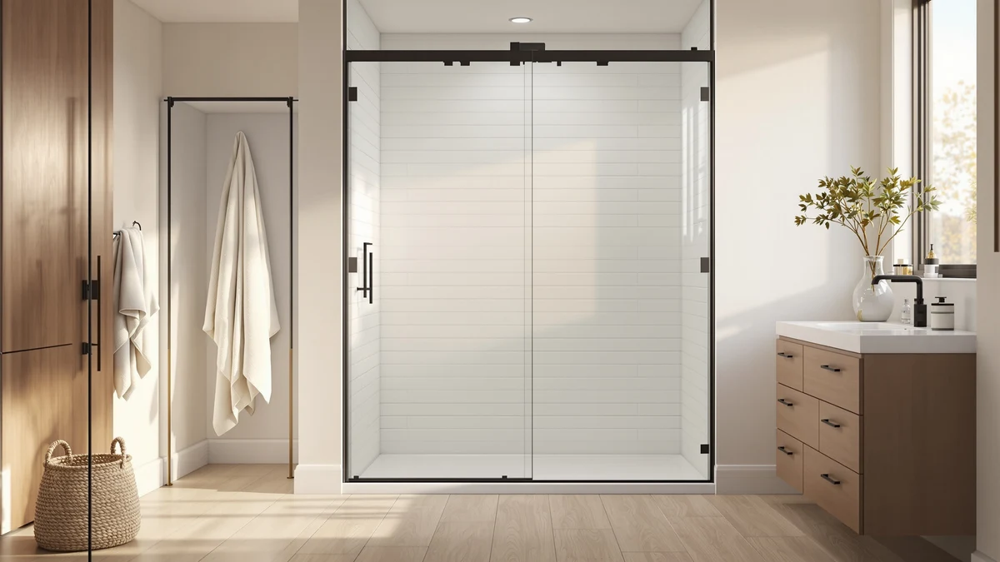

Quick Answer
For most bathrooms, the WOODBRIDGE 57.5-60" frameless sliding door is the one to buy: 3/8" (10mm) tempered glass, soft-close rollers, and a recognized brand behind it. If your budget is tight or you have a smaller alcove, the UCALAFEE slider does the job for around $230.
Our pick: Woodbridge 57.5-60" Wx76 H Soft — $615.12 Check Price on Amazon
Things to Know Before You Buy
- Glass thickness is the biggest tell. 3/8" (10mm) tempered glass feels solid and sits at the premium, mostly-frameless end; 1/4" (6mm) is lighter and cheaper and shows up on framed and semi-frameless doors. Either way, insist on tempered safety glass that meets ANSI/CPSC standards.
- Frameless vs. framed is a tradeoff, not a ranking. Frameless looks clean and has no metal channel to trap mildew, but costs more and needs solid wall anchoring. Framed and semi-frameless seal water better and cost less, at the price of visible aluminum.
- Match the door type to your opening. Sliding and bypass doors save space because nothing swings out, which suits alcoves and tub conversions. Pivot and hinged doors give you a wider walk-in but need clearance to swing. Corner and neo-angle enclosures are for showers tucked into a corner.
- Measure the width in three places. Most doors fit an adjustable range like 56 to 60 inches, and reversible left/right installation is common, but you have to buy for your actual opening, using the narrowest of your top, middle, and bottom measurements.
- The door is just the door. Unless it is sold as an enclosure kit, you supply the base or pan. Frameless installs usually need wall studs or anchors plus silicone sealing, and heavier 10mm glass is a genuine two-person job.
A shower door is one of those upgrades that quietly changes how the whole bathroom feels. Swap a mildewed curtain or a dated framed unit for a clean sheet of glass and the room reads bigger, brighter, and more finished, often for a couple hundred dollars. But the category is confusing on purpose: frameless versus framed, sliding versus pivot, 10mm versus 6mm glass, and a dozen size ranges that all sound interchangeable until you are standing in the aisle with a tape measure.
We looked at what actually separates a door you will be happy with in five years from one you will fight with every week: glass thickness and certification, hardware that does not sag or leak, a size range that fits real openings, and honest install expectations. The seven doors below cover the situations most people are shopping for, an alcove tub-to-shower conversion, a walk-in, a corner shower, and a want-it-to-look-expensive frameless upgrade, at prices from about $230 to $637.
Our overall pick is the WOODBRIDGE frameless slider, but the right door depends entirely on your opening and your budget, so we have flagged exactly who each one is for. If you are still deciding between door styles, the buying guide and comparisons at the bottom will help you narrow it down before you commit.
Why You Should Trust Us
This guide is written and maintained by Ilane Tall, who runs a small network of bathroom-focused review sites and has spent years comparing fixtures on the specs that actually predict satisfaction rather than marketing copy. We do not run a fake testing lab, and we did not bolt seven shower doors to a warehouse wall. What we do is read every spec sheet, cross-check glass thickness, size ranges, and hardware against the listing photos and the recurring themes in owner reviews, flag the complaints that keep coming up, and refuse to recommend anything we would not install in our own bathroom. Our Amazon commissions never change a ranking.
How We Picked
We started with the shower doors in stock on Amazon and filtered hard. We required tempered safety glass, a clearly stated adjustable width range, and hardware described in enough detail to judge (roller type, frame material, coating). We prioritized recognized brands with a track record in the category, WOODBRIDGE and DreamLine especially, but kept several well-reviewed value doors so the list covers tight budgets as well as premium upgrades. Then we grouped the survivors by the decision buyers actually face: what shape is your opening, and how much do you want to spend? That is why the list spans a budget alcove slider, an on-trend matte-black bypass, a pivot for wider walk-ins, two corner enclosures, and a frameless flagship, rather than seven near-identical doors.
How We Tested
Testing a shower door honestly means judging the things that predict long-term satisfaction, not staging a dramatic photo shoot. We compared stated glass thickness against price to see who is really giving you 10mm versus thin 6mm; we checked whether roller and hinge hardware is stainless or coated to resist rust in a wet environment; and we read owner reviews specifically for the failure patterns that matter, doors that drift open, seals that leak at the bottom, and coatings that spot over time. We also weighed install reality: how many people it takes to lift the glass, whether it anchors into studs, and how forgiving the adjustable range is for out-of-square walls. Where a door had a recurring, legitimate flaw, we say so in its two cons.
Our Picks

Woodbridge 57.5-60" Wx76 H Soft
What we like
- Substantial 3/8" (10mm) certified tempered glass that feels solid, not flimsy
- Soft-close rollers ease the door shut instead of slamming
- Frameless design with minimal metal, so there is less to clean and nothing to trap mildew
- WOODBRIDGE is an established bath brand with real parts and support
Flaws but not dealbreakers
- At around $615 it is the priciest slider here, and clearly a splurge over the budget picks
- The 10mm glass is heavy, so plan on a helper and solid wall anchoring for the install
| Material | — |
| Size | 60"x76" |
The WOODBRIDGE earns the top spot because it gets the fundamentals right. The glass is genuine 3/8" (10mm) tempered, which is the thickness you feel the moment you slide the door, it moves with a reassuring weight rather than the rattle you get from thin 6mm panels. The soft-close rollers are the detail that sells it day to day: nudge the door and it glides the last few inches shut on its own instead of banging against the jamb. Combined with the frameless styling, it delivers the spa-glass look that usually costs a lot more from a showroom.
The catch is what you would expect from a premium door: price and weight. It is the most expensive slider on this list, and that thick glass is a real two-person lift that wants to anchor into studs, not just tile. If your opening falls in the 57.5 to 60 inch range and you want a door you will not think about again for years, the WOODBRIDGE is the one we would buy. If that budget makes you wince, keep reading, the value picks below are genuinely good.

UCALAFEE Shower Door 44-48" W
What we like
- Around $230, easily the best value on this list
- Tempered safety glass in a straightforward sliding design that saves space
- Fits a common 44 to 48 inch range, ideal for tub-to-shower conversions
- Simpler hardware means a more approachable DIY install
Flaws but not dealbreakers
- Uses thinner 1/4" (6mm) glass, so it does not have the heft of our top pick
- Fits a narrower opening than the 56 to 60 inch doors, confirm your width before buying
| Material | — |
| Size | 44-48 in. W x 72 in. H |
Not every bathroom needs, or can justify, a $600 door. The UCALAFEE is the pick for everyone else. For around $230 you get a real tempered-glass sliding door that fits the 44 to 48 inch openings common in older bathrooms and tub-to-shower conversions, and it looks far more current than the vinyl curtain or dated framed unit it is replacing. The sliding design means nothing swings into your bathroom, which matters when the room is small.
You are making sensible tradeoffs at this price. The glass is 1/4" (6mm) rather than 10mm, so it is lighter and does not carry the same solid feel, and the fit window is narrower than the flagship doors, so you have to measure carefully. But the lighter glass is actually easier to handle solo, and for a secondary bathroom, a rental, or anyone who just wants a clean glass door without overspending, the UCALAFEE punches well above its price.

Frameless Shower Door Matte Black
What we like
- Matte-black finish is the current design trend and hides water spots better than chrome
- Frameless single bypass design keeps the glass clean and open
- Fits a versatile 56 to 60 inch range
- Strong value at around $296 for the frameless-plus-black combination
Flaws but not dealbreakers
- Matte-black coating can scratch or wear at high-touch spots over years of use
- A bold finish is a commitment, it looks great now but is harder to restyle later than neutral chrome
| Material | — |
| Size | 60" W x 75" H Single Sliding |
If you have been saving bathroom inspiration photos, chances are half of them feature matte-black hardware. This frameless single bypass slider delivers that look without a custom-glass budget. The black rails frame the glass cleanly, and unlike polished chrome, matte black is forgiving about water spots and fingerprints between cleanings. At around $296 it sits right between the budget and premium tiers, which is a fair price for the frameless-and-black pairing.
Two honest caveats. Matte-black finishes, on any brand, can scuff or thin at the spots you grab most often, so treat the hardware gently and skip abrasive cleaners. And a strong finish is a style commitment: it looks fantastic in a modern or industrial bathroom today, but it is more of a statement to design around than a neutral chrome door you can forget about. If black is the whole reason you are shopping, this is the pick that nails it in the 56 to 60 inch range.

Frameless Pivot Shower Door 33-34"
What we like
- Pivot swing gives a wider, unobstructed entry than a slider
- Frameless glass looks clean and is easy to wipe down
- Well suited to a single-wall walk-in shower opening
- Reasonable $285 for a frameless pivot door
Flaws but not dealbreakers
- Needs clearance to swing, so it will not work in a tight bathroom where a slider fits
- Narrow 33 to 34 inch fit range means it only suits a specific opening width
| Material | — |
| Size | 34"W×72"H |
Sliding doors save space, but they only ever give you half the opening, because one panel always overlaps the other. A pivot door solves that. This frameless 33 to 34 inch pivot swings fully open, so you step into the shower through the entire width, which is a real quality-of-life difference in a walk-in and a genuine help if mobility is a consideration. The frameless glass keeps the look modern and the cleanup easy.
The tradeoff is clearance. A pivot door needs empty floor space in front of it to swing, so it is the wrong choice for a cramped bathroom where a bypass slider would tuck neatly against the wall, that is exactly why we did not make it the overall pick. It also fits a specific narrow width, so measure before you commit. But for a single walk-in opening around 34 inches with room to open, this is the door that feels the most generous to actually use.

Hydrave Corner Shower Enclosure 34
What we like
- Complete corner enclosure with two glass walls, not just a single door
- Space-efficient 34 x 34 inch footprint that fits an unused corner
- Sliding entry saves floor space in an already-tight layout
- Affordable at around $260 for a full two-sided enclosure
Flaws but not dealbreakers
- You still supply a compatible corner base or tiled pan, it is not a full kit with a floor
- Two-wall corner installs are more finicky to align and seal than a single flat door
| Material | — |
| Size | 34×34×72in |
Not every bathroom has a neat alcove. If your shower lives in a corner, you need two glass walls, not one door, and that is exactly what the Hydrave enclosure provides. Its 34 by 34 inch footprint is designed to claim an otherwise-wasted corner and turn it into a real, enclosed shower, with a sliding entry so nothing swings into the room. At around $260 for a complete two-sided enclosure, it is a lot of shower for the money.
Go in with clear expectations on two points. First, this is the glass enclosure, not a floor: you still need a compatible corner shower base or a properly tiled and sloped pan underneath it. Second, aligning and sealing two walls that meet at a corner is fussier than hanging one flat door, so take your time with the silicone and, ideally, have a second set of hands. Get those right and you have a tidy corner shower where there used to be an awkward empty nook.

ENSO SENKA 56-60" W x
What we like
- Semi-frameless design gives most of the open glass look with a more watertight seal
- Bypass slider fits the popular 56 to 60 inch range and saves space
- Around $266, noticeably cheaper than the fully frameless top pick
- Minimal framing still keeps cleaning easy
Flaws but not dealbreakers
- The visible edge framing is not the pure frameless look of the WOODBRIDGE
- Semi-frameless glass is typically thinner than the flagship 10mm, so it feels a bit less substantial
| Material | — |
| Size | 60" W X 72" H |
Semi-frameless is the smart middle ground, and the ENSO SENKA is our favorite example of it. It keeps the glass panels mostly open with just enough edge framing to improve the seal and bring the price down, so from a step back it reads almost as clean as a fully frameless door. It fits the same popular 56 to 60 inch openings as our top pick and uses the same space-saving bypass slide, for roughly $350 less.
It lands at runner-up rather than the top for two honest reasons: the edge framing means it is not the pure frameless statement the WOODBRIDGE makes, and the glass is generally thinner than 10mm, so it does not feel quite as solid in the hand. Neither is a real problem, they are the exact tradeoffs that let it cost less. If you want most of the flagship look and the more forgiving seal of a little framing, without the flagship price, the SENKA is the value play in the 56 to 60 inch class.

DreamLine French Corner 34 1/2
What we like
- DreamLine is a top, widely trusted brand with strong support and parts availability
- Framed corner design seals water reliably, a real strength in an enclosure
- French-corner styling with a space-saving sliding entry
- Complete two-wall corner enclosure from a premium maker
Flaws but not dealbreakers
- At around $637 it is the most expensive pick here
- The visible metal framing is a more traditional look than a frameless enclosure
| Material | — |
| Size | 34.5" W x 34.5" D |
When you are enclosing a corner and want the reassurance of a name with a track record, DreamLine is the brand most people land on, and this French Corner enclosure is why. It is a complete two-wall corner unit with a sliding entry, built around framed glass that seals water dependably, which is exactly what you want where two walls meet and leaks are most likely. You are paying for engineering and a company that will actually have replacement parts years from now.
The two things to weigh are price and style. At roughly $637 it is the priciest pick on this list, a clear premium over the Hydrave corner enclosure, and the framed construction gives it a more traditional look than a minimalist frameless unit. If you prefer the open frameless aesthetic or you are watching the budget, the Hydrave covers the same corner for far less. But if you want the most trusted brand and the confident seal of a framed corner around 34.5 by 34.5 inches, the DreamLine is the premium choice.
Quick Comparison
| Product | Material | Price | Rating | Best for | Get it |
|---|---|---|---|---|---|
| Woodbridge 57.5-60" Wx76 H Soft | — | $615.12 | 4 | Best overall, 57.5-60" alcoves | View on Amazon → |
| UCALAFEE Shower Door 44-48" W | — | $229.99 | 4 | Best budget, 44-48" alcoves | View on Amazon → |
| Frameless Shower Door Matte Black | — | $296.04 | 4 | Best matte black, 56-60" | View on Amazon → |
| Frameless Pivot Shower Door 33-34" | — | $284.99 | 4 | Best pivot, 33-34" walk-ins | View on Amazon → |
| Hydrave Corner Shower Enclosure 34 | — | $259.99 | 4 | Best corner, 34x34" showers | View on Amazon → |
| ENSO SENKA 56-60" W x | — | $265.93 | 4 | Best semi-frameless value | View on Amazon → |
| DreamLine French Corner 34 1/2 | — | $637.49 | 4 | Best premium, 34.5" corners | View on Amazon → |
The Competition
We looked at plenty of doors that did not make the cut. A wave of ultra-cheap sub-$200 sliders showed up in our search, but most pair thin glass with lightweight aluminum tracks and a steady drumbeat of reviews about doors that drift open or leak at the bottom sill, the UCALAFEE was the least expensive door we were comfortable recommending.
On the high end, several boutique fully-frameless hinged panels look stunning but cost well north of our DreamLine pick and demand near-perfect walls plus, often, professional installation, which pushes them out of the DIY-friendly range this guide targets. We also passed on a number of quick-ship doors that would not clearly state glass thickness or certification; if a listing hides its glass spec, we treat that as a red flag rather than a bargain.
Finally, we skipped most of the no-name matte-black clones. Matte black is the trend, but the finish quality varies wildly, and the frameless bypass we chose had the most consistent reviews for a coating that actually holds up. When two products looked similar on paper, we favored the one with a real brand and a track record over the cheapest listing.
Frequently Asked Questions
Do I need a frameless or framed shower door?
Frameless doors use thick tempered glass (3/8" or 10mm) with minimal metal, so they look cleaner and have fewer seams to trap mildew, but they cost more and rely on precise wall anchoring. Framed and semi-frameless doors use thinner 1/4" glass held in a metal track, which seals water better and costs less. If you want the high-end open look and will keep the glass squeegeed, go frameless. If you want the most watertight, budget-friendly option, a framed slider is smarter.
How do I measure for a shower door?
Measure the width of your opening at the top, middle, and bottom, since walls are rarely perfectly plumb, and use the smallest number. Most doors fit an adjustable range, for example 56 to 60 inches, so match your measurement to that window rather than to a single size. Also check the height and confirm whether your opening is an alcove (walls on both sides), a corner, or a single wall return, because that determines whether you need a slider, a pivot, or a corner enclosure.
Does a shower door come with a base or shower pan?
Almost never, unless the listing specifically says "enclosure kit." A standard sliding, pivot, or bypass door is just the glass panels and hardware, and it installs onto your existing tub ledge, tiled curb, or shower pan. Corner enclosures like the Hydrave and DreamLine models include the two glass walls but still expect you to supply a compatible base or tiled floor. Budget for the pan separately if you are building a shower from scratch.
What glass thickness should a shower door have?
For a premium, solid-feeling frameless door, look for 3/8" (10mm) tempered glass like our WOODBRIDGE top pick. For framed and semi-frameless doors, 1/4" (6mm) tempered glass is standard and perfectly fine, it is lighter and cheaper, and the frame does the structural work. What you should never accept is glass that is not tempered safety glass, so confirm the listing states tempered or meets ANSI/CPSC standards before buying.
Can I install a shower door myself?
Many of these are realistic DIY or handyman jobs, especially the lighter 1/4" glass sliders like the UCALAFEE. The install involves leveling the tracks, anchoring into the wall (studs or proper anchors), and sealing with silicone. Heavier 10mm frameless doors are a genuine two-person lift and less forgiving of out-of-square walls, and corner enclosures add the challenge of aligning two walls. If your walls are badly out of plumb or you are nervous about anchoring heavy glass, it is worth hiring a pro.
Are frameless shower doors harder to keep clean?
Usually the opposite. Frameless doors have less metal channel for mildew and soap scum to hide in, so there are fewer seams to scrub. The catch is that the glass itself shows water spots more plainly with no frame to distract the eye, so a quick daily squeegee keeps a frameless door looking its best. Framed doors hide spots a bit better but give mildew more places to collect in the tracks.